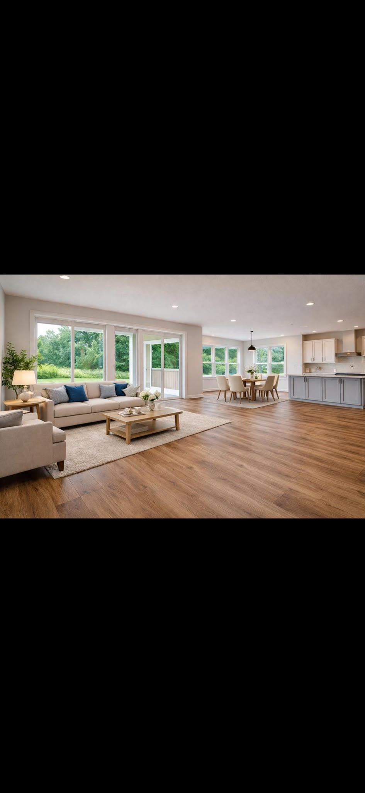

Flooring services
Craftsmanship for every surface.
Installation, refinishing, repair, and restoration for Connecticut homes and businesses.





Flooring services
Installation, refinishing, repair, and restoration for Connecticut homes and businesses.
